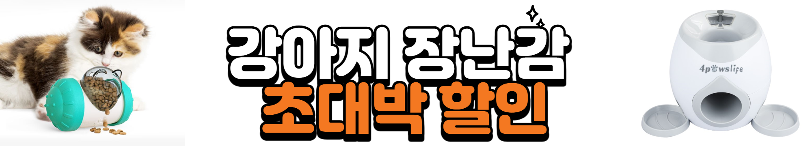
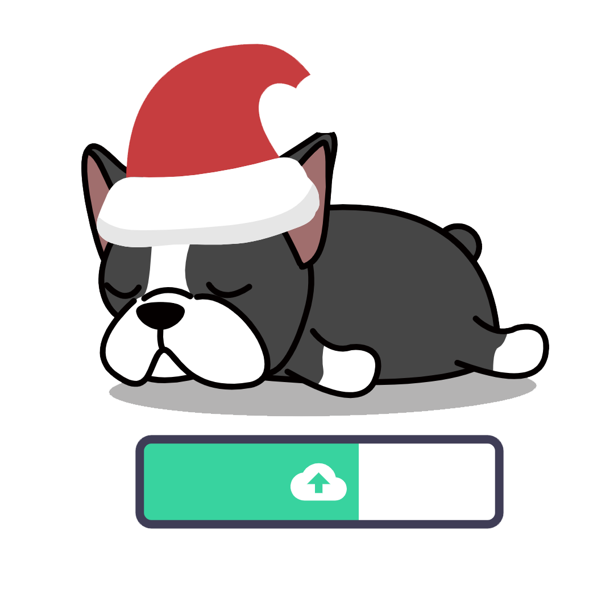
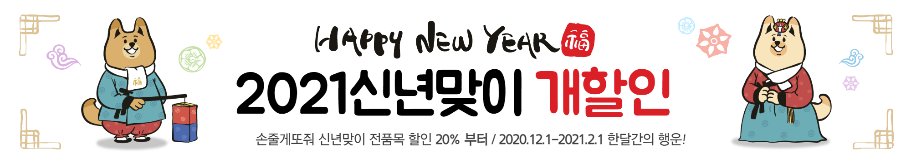

AI 멍상 성격 테스트
Home
👑멍상 성격 테스트👑
✨멍상으로 알아보는 반려견 성격 테스트🔍


사진을 올려 놓거나,
눌러서 업로드하세요!
사진은 절대 어디에도 저장되지 않습니다.
⏳AI가 멍상을 분석중입니다🔍
💡결과 확인하기✨
다른 사진으로 재시도

Please enable JavaScript to view the
comments powered by Disqus.
X